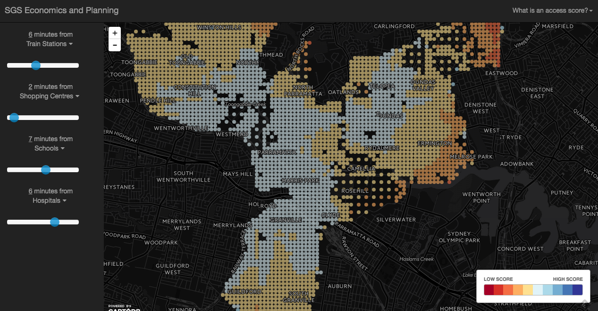

Tangent
As some of you may already know, I was a urban planner before I became a web developer. And before all of that, I was a graphic designer. It doesn't seem like a great decision for someone who was always into designing and making things. Honestly, working on something not design related (for a while) turned out to be the best decision I have ever made.
I got to observe how business tackle daily design-related problems without any help from designers or developers. For example - ... I also got to experience first hand, how painful it is, to read and use something that was produced due to a number of ill-fated design deicions. All these, I would never had experienced, if I had stayed and worked strictly in a design and development environment.
I went on and developed a few products to help the business operate a bit better. For example...
Overall I feel this experience had made me a better designer, because when I started to work in web development again, I was more aware of what the users actually want, as opposed to what was implied in a convoluted design specification document
